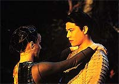
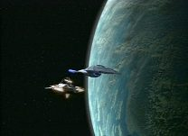
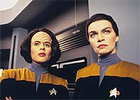
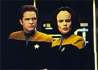
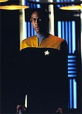
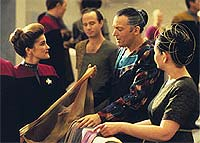

|
MANCHETE
DO EPISDIO
Tripulao
sente na pele a Primeira
Diretriz e se amotina contra Janeway
Episdio
anterior | Prximo
episdio
Sinopse:
Data Estelar: 48642.5.
 A
tripulao de Voyager encontra uma raa aliengena conhecida
como Sikarians --uma raa renomada por sua incrvel hospitalidade.
Quando o alferes Kim descobre que os Sikarians tem uma tecnologia
que pode fazer Voyager viajar 40.000 anos-luz em um instante (mais
da metade da distncia de onde a nave se encontra da Terra), a
tripulao acha que a est a maneira que vai faz-los voltar
para casa.
No entanto, os costumes dos Sikarians no permitem que eles faam
intercmbio de informaes sobre suas tecnologias com outras raas.
 Como
a capit Janeway acaba concordando com essa deciso, baseada no
respeito s leis aliengenas, conforme instrui a Primeira Diretriz
(da no-interferncia), alguns membros descontentes da tripulao
de Voyager planejam no seguir as ordens da capit. Entre os
descontes esto B'Elanna Torres, Seska e... Tuvok!
Eles secretamente trocam a tecnologia com alguns nativos por
arquivos literrios dos bancos de dados da Federao. Apesar
disso, o equipamento se mostra incompatvel com os sistemas da
Voyager.
Os amotinados assumem sua culpa perante a capit, mas escapam sem
punio --Janeway precisa deles em seus postos.
Comentrios:
A Primeira Diretriz costuma ser um problema para os outros.
Em "Prime Factors", Janeway e sua tripulao
sentem na pele o que ser vtima de uma poltica como essa.
 O
episdio vinga como um dos melhores da temporada graas a vrios
fatores. Entre eles, o fato de a histria tratar de uma premissa
verdadeiramente original e a capacidade de instigar o conflito entre
os tripulantes. Mas nada se compara sua maior virtude: ele
consegue explorar o potencial da nave estar totalmente isolada e
longe de casa. Isso que faz do episdio especial -- a primeira
histria que casa perfeitamente com a premissa da srie.
No fcil aceitar quando outra civilizao tem a capacidade
de ajudar, mas no o faz meramente para cumprir com sua poltica
vigente. Acostumada aos dilemas morais da capitania, Janeway acata a
deciso dos aliengenas. Mas nem todos os seus tripulantes
concordam com esse respeito.
 Tendo
a chance de obter a tecnologia, Torres, Seska e Carey decidem por se
amotinar, trazendo a tenso entre os tripulantes que mantm o
telespectador grudado na cadeira para saber como tudo vai terminar.
E o ponto alto no tarda a surgir. Nos holofotes, Tuvok.
O Vulcano quem mais sai ganhando do episdio. A cena em que ele
se revela como um dos partidrios do motim para trs assustados
oficiais sensacional. Sua explicaes para a capit tambm so,
perdoem-me o termo, "fascinantes".
 Em
compensao, quem no sai nada bem do episdio a pobre capit
Janeway. Alm de ter se mostrado fraca enquanto lder (levando ao
motim da tripulao), ainda obrigada a manter todos em seus
postos, por no haver substitutos. Kate Mulgrew atua muito bem:
possvel ler em seus olhos a completa decepo da capit,
desiludida com sua capacidade de comando.
Mesmo assim, fica meio esquisita essa atitude de "perdoar"
todos os amotinados. o primeiro uso verdadeiramente prejudicial
do famoso "boto reset", to comum ao longo da srie.
difcil acreditar que um motim no mudaria em nada a rotina e a
distribuio de cargos entre os tripulantes.
 A
real razo para que Janeway mantivesse Tuvok e Torres em seus
postos no necessidade da capit, mas dos produtores --para
manter todo mundo no mesmo lugar quando comear o prximo episdio.
Essa poltica foi deliberadamente implementada em Voyager
durante toda a srie. Os produtores no queriam se compremeter com
a continuidade de eventos de um episdio para outro.
Apesar disso, "Prime Factors" se apresenta como um
conceito inovador dentro de Jornada nas Estrelas e merece
todos os crditos como um dos melhores episdios do primeiro ano.
Citaes:
Tuvok - "My logic was not
in error, but I was."
("Minha lgica no estava equivocada, mas eu estava.")
Trivia:
 Sobre Tuvok conspirar contra sua prpria capit, Tim Russ (o prprio
Vulcano) opina: "Os produtores disseram para mim que a razo
para as aes de Tuvok era porque aquela era a nica coisa lgica
a fazer no momento, algo que no concordei. Para mim as razes
foram duas. A primeira : a principal meta da capit levar
todos de volta ao quadrante Alfa. Tuvok resolveu pr em risco sua
carreira para fazer a capit atingir essa meta. Esse no foi, na
minha opinio, um ato "no-Vulcano". Afinal, "as
necessidades de muitos superam as de poucos (ou a de um s), no?".
"A segunda razo", prossegue Russ, " que os
produtores fazem de tudo para prender o telespectador. Apenas isso.
Eles querem surpreender voc."
Sobre Tuvok conspirar contra sua prpria capit, Tim Russ (o prprio
Vulcano) opina: "Os produtores disseram para mim que a razo
para as aes de Tuvok era porque aquela era a nica coisa lgica
a fazer no momento, algo que no concordei. Para mim as razes
foram duas. A primeira : a principal meta da capit levar
todos de volta ao quadrante Alfa. Tuvok resolveu pr em risco sua
carreira para fazer a capit atingir essa meta. Esse no foi, na
minha opinio, um ato "no-Vulcano". Afinal, "as
necessidades de muitos superam as de poucos (ou a de um s), no?".
"A segunda razo", prossegue Russ, " que os
produtores fazem de tudo para prender o telespectador. Apenas isso.
Eles querem surpreender voc."
Um dos escritores deste episdio, Eric
Stillwell, apesar de relativamente desconhecido, tem um lugar seguro
na histria de Jornada nas Estrelas. Foi ele um dos que
escreveu o episdio clssico da Nova Gerao "Yesterday's
Enterprise"
Ficha
tcnica:
Histria de David R. George III &
Eric Stillwell e Michael Perricone & Greg
Elliot
Roteiro de Michael Perricone & Greg Elliot e Jeri
Taylor
Dirigido por Les Landau
Exibido em 20/03/1995
Produo: 010
Elenco:
Kate Mulgrew como
Kathryn Janeway
Robert Beltran como Chakotay
Roxann Biggs-Dawson como B'Elanna Torres
Robert Duncan McNeill como Tom Paris
Jennifer Lien como Kes
Ethan Phillips como Neelix
Robert Picardo como Doutor
Tim Russ como Tuvok
Garrett Wang como Harry Kim
Elenco convidado:
Martha Hackett como Seska
Josh Clark como tenente Carey
Andrew Hill Newman como Jaret
Ronald Guttman como Gath
Yvonne Suhor como Eudana
Episdio
anterior | Prximo
episdio
|